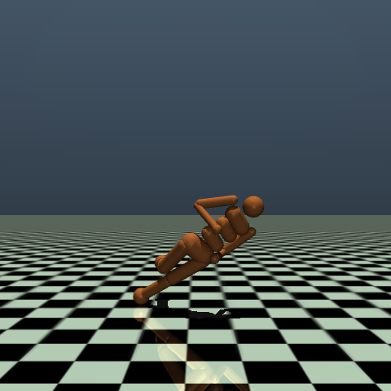
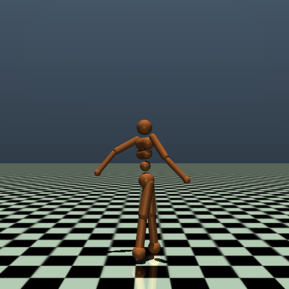
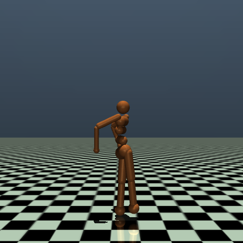
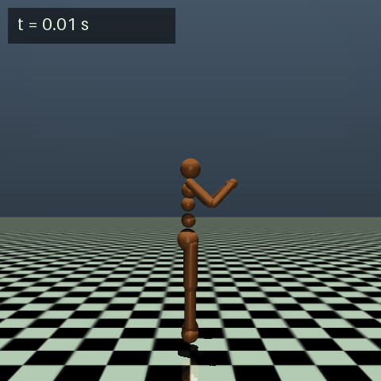

Humanoid Standing Balance & 100N Push Recovery
This is a write-up of my project on training a 17-actuator bipedal humanoid to maintain stationary balance and recover from unexpected horizontal pushes. I trained the agent using Proximal Policy Optimization (PPO) and iterated across three distinct reward phases (v1 to v3). The best performing model is v3 (origin-locked balance, 50M steps).
Model Card: Humanoid-Balance-v3 (Best)
System specifications, observation space topology, curriculum disturbance schedule, and operational limits of the trained balance policy.
| Architecture |
Continuous Actor-Critic MLP. The actor network has 2 hidden layers with 64 units each and Tanh activations. Outputs continuous torque values for 17 actuated joints, bound to [-0.4, 0.4].
|
|---|---|
| Task | Maintain stationary upright bipedal stance, lock root position near origin, and absorb random horizontal impulses up to 100N without stepping or falling. |
| Observation Space (367-D) |
|
| Disturbance Curriculum |
|
| Training Setup |
Gymnasium Humanoid-v5 with MuJoCo 3.12, Stable-Baselines3 PPO, and 12 parallel environments (SubprocVecEnv). Trained locally on an RTX 3050 Laptop GPU / AMD Ryzen 5.
|
| Failure Condition | Termination triggers if torso center-of-mass height drops below $z < 0.8\text{m}$ (nominal height is $1.4\text{m}$) or torso tilt exceeds $60^\circ$ after a 100-step grace period. |
Visual Demos & Push Recovery
Here is the visual difference between the baseline adaptation (v1) and the v3 converged policy under external pushes.



How I Improved It: From v1 to v3
Getting standing balance to work took several distinct iterations to solve joint chattering, lateral drifting, and fall recovery.
Visual Comparison: Free Fall to Trained Policy
Each image captures the humanoid's posture at its final trained checkpoint. From left to right: the untrained free fall baseline, v1's unstable collapse, v2's first stable stance, and v3's origin-locked balance (best). All four clips run 8.0 s at 25 fps with a burned-in sim timer — they start at t = 0 together and loop together, so falls and recoveries are directly comparable. v2 and v3 take the same three 150 N shoves: v2 absorbs them but skates sideways, while v3 stays locked to its origin.
 v1 Final (8.5M)
Toppled by 150N shove
v1 Final (8.5M)
Toppled by 150N shove

v3 Best (50M) Holds origin under 150N×3Evaluation Graphs (All 3 Versions)
These curves plot real evaluation data across all three iterations logged during training:
runs/humanoid_balance*/eval/evaluations.npz and TensorBoard event logs (refreshed 2026-09-03). v1 failed early; v2 and v3 reached 50M steps with v3 as the best origin-locked model.
Reward Formulation (v3 Best)
The step reward $R_t$ balances posture stability, energy efficiency, and impulse recovery: